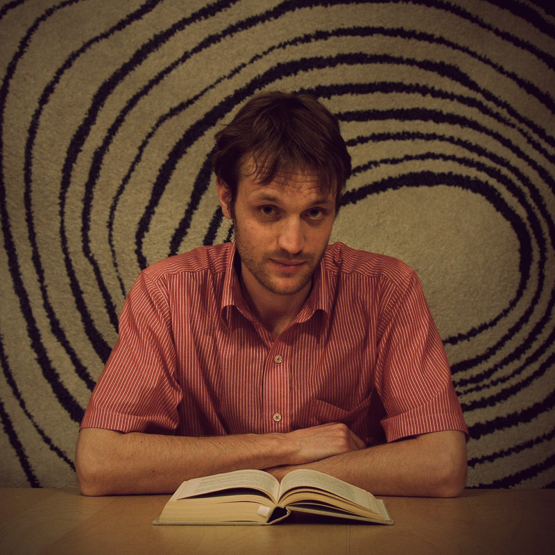
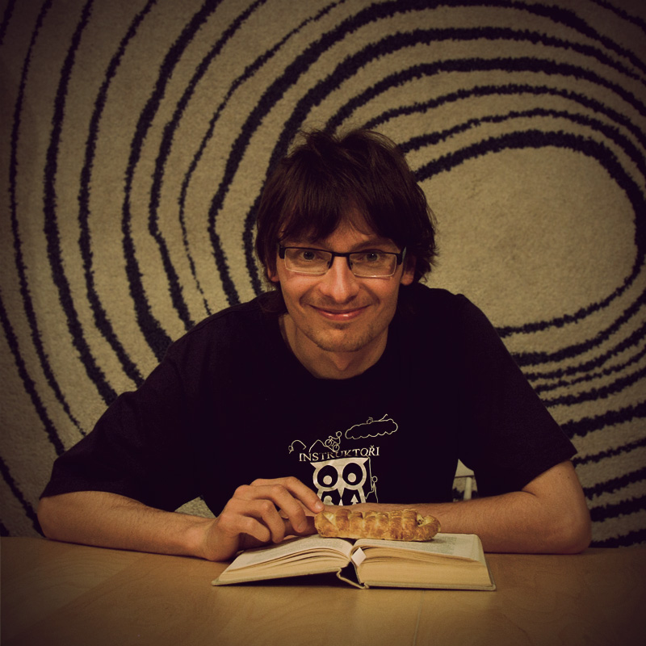
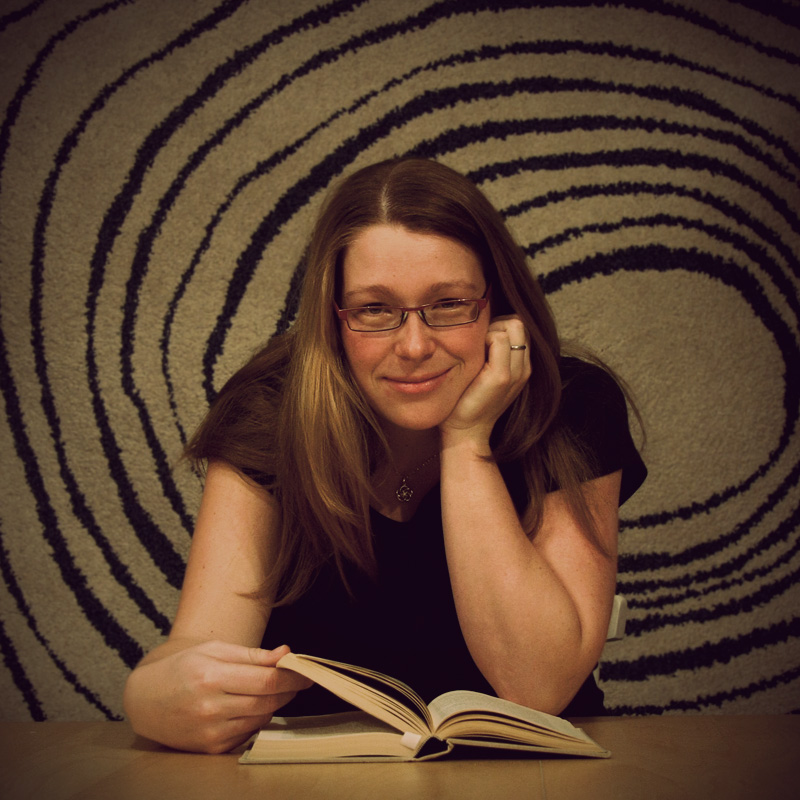
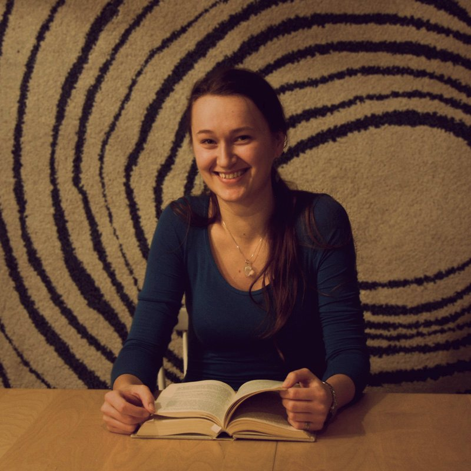

... a kde nacházíme klid?
Vojta Benda
 V poryvech větru na hřebeni hor, ve sklence čaje na palubě lodi plující mezi břehy Istanbulu a v náručí své ženy.
Matěj "Glum" Píro
V přírodě pod nočními hvězdami... Na travnatých horských loukách s větrem ve vlasech... V posteli po dlouhých a náročných bězích... S hrstkou dobrých přátel, kteří mi rozumí a mají mne rádi... Tam chodím za svým svým klidemAni Macková
 Ten vnitřní, životní klid, jistota, ten si mě našel před rokem spolu s mateřstvím a je v očích mé dcery, ve smíchu naší rodiny a ve společných chvilkách. Ten prchavý, pomíjivý klid, čas sama na sebe, ten nejčastěji na povrch vylézá v podzimních lesích a na jarních loukách. Má rád křupání sněhu pod nohama, vůni kávy, pohyb a východy slunce.
Šári Křepelková
Klid hledám v sobě. A nacházím jej prostřednictvím přírody, která mi umožňuje neustále žasnout, praskajícího ohně, který mi prohřívá tělo, věcí, které mi dávají smysl. V objetí blízkého člověka. Většinou v okamžiku, kdy čas jakoby nebyl.
Kurz pořádáme v rámci občanského sdružení Instruktoři Brno.